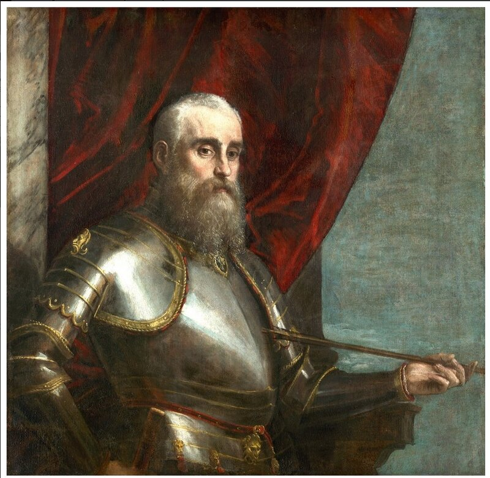

Паоло Веронезе. Портрет Агостино Барбариго. Кливлендский Музей изящных искусств
Противостоящая линия турок состояла из 54-56 галер. Вспомним, что на правый фланг своего флота Али-паша поместил эскадру мелкосидящих галер и галиотов под командованием санджак-бея (Sancak Beyi) Александрии Шулуч Мехмед-паши (Şuluç Mehmed Pasha), который привел с собой из Египта 21 галеру и 2 галиота.
[Мы подробно останавливались на многообразии написаний имени этого бея. Здесь добавим лишь, что в турецких источниках его чаще всего именуют так: İskenderiye Beyi Şolok Mehmet - бей Александрии Шолок Мехмет; происхождение прозвища Şolok связывают с названием средиземноморского южного ветра сирокко (şirok, şolok); отсюда и европейское его имя Сирокко. Впрочем, немцы именуют его иногда вообще Mohammed-Schaoulak (Hammer).]
Во время стоянки в Лепанто Мехмет-паша принял на борт группу местных лоцманов, прекрасно знавших прибрежные воды в этом районе. Кроме того, генуэзский ренегат корсар Али Генуэзец, возглавлявший отряд галиотов Северной эскадры турок, не раз проводил свои пиратские рейды по этим местам. (Заметим, что этого корсара часто путают, даже в работах авторитетных авторов последнего времени, с другим капитаном турецких галиотов Гяуром Али. Этот последний на самом деле входил с состав центральной эскадры турок и к операции на северном фланге отношения не имел.) Замысел был прост: турецкие галеры должны обойти левый фланг христиан по мелководью, прижимаясь к берегу, после чего нанести удар с тыла.
Командующий эскадрой христиан Агостино Барбариго разгадал маневр турецкого бея, но не мог выдвинуть свои галеры ближе к побережью, чтобы воспрепятствовать проходу турок в тыл: и галеры его были более тяжелые, и капитаны их слабо ориентировались в сложных условиях акватории Патрасского залива.
И тогда Барбариго осуществляет маневр, который является одним из самых ярких тактических решений всего сражения. Сохраняя строй, он повернул всю шеренгу как единое целое против часовой стрелки, прижимая турецкие корабли к берегу (положение 2 на приведенной схеме). Кроме того, осуществляя этот маневр, Барбариго дал возможность галеасам подтянуться к месту скопления турецких галер и возобновить губительный огонь по ним.

Схема сражения при Лепанто
Турецким лоцманам удалось провести несколько галер по наносам устья реки Ахелос в обход мыса Малкантоне. Но Барбариго среагировал на этот маневр противника очень быстро. Он, не нарушая строя своей эскадры, направил в место прорыва четыре венецианских галеры из авангарда флота Лиги под командованием Хуана де Кардона, которые только что присоединились к эскадре Барбариго и находились как раз по корме от флагманской галеры. Это решение оказалось очень своевременным. Прорвалось в тыл уже до десятка турецких галиотов. Однако первый же подошедших корабль христиан Santa Maria Maddalena под командованием Марино Контарини, несмотря на явное численное превосходство турок, устремился к ним и ввязался в жестокую абордажную схватку.
Эскадра Барбариго, продолжая сохранять линию, все ближе прижимала турок к берегу. Ближе всех к противнику находилась флагманская капитана Барбариго, окрашенная по венецианской традиции в красный цвет, в отличие от коричневого для всех остальных галер Светлейшей. Именно с корабля Барбариго отдавались команды на галеры эскадры, которые обеспечивали согласованность их действий. Флагман Барбариго подошел так близко к берегу, что «даже маленькая шлюпка не могла бы пройти мимо», не подвергнув себя опасности быть уничтоженной огнем носовой артиллерии венецианского флагмана.
В это время бой галеры Санта Мария Маддалена с превосходящими силами турок продолжался. Выстрелом из аркебузы был убит капитан Марино Контарини. Погибли многие офицеры галеры. Принявший на себя командование Паоло Орсини, командир десанта на галере, также вскоре получил сильные ожоги от пламени зажигательного снаряда. Но в это время на помощь Св. Маддалене подоспела галера капитана Винченцо Кверини Il Sole, она отвлекла на себя турецкие галеры. Ценой больших потерь, активно используя артиллерию малых калибров, галера Кверини заперла отряд турок в небольшом заливе. В ходе боя Кверини был убит, но благодаря действиям экипажей двух венецианских галер прорвавшиеся турецкие галеры были остановлены и основные силы христианской эскадры смогли успешно завершить начатый маневр.
Продолжим в следующий раз.